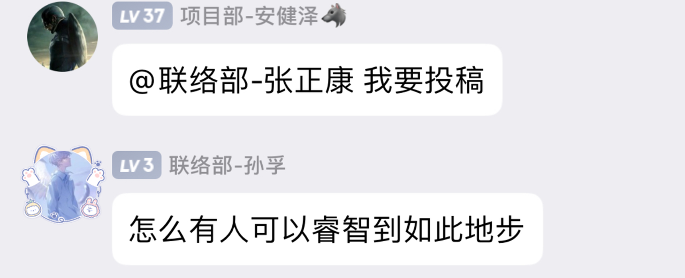
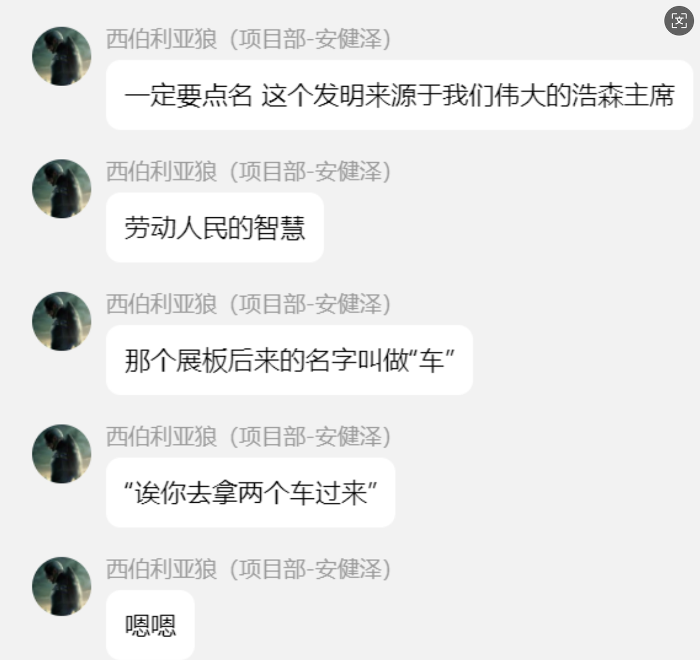
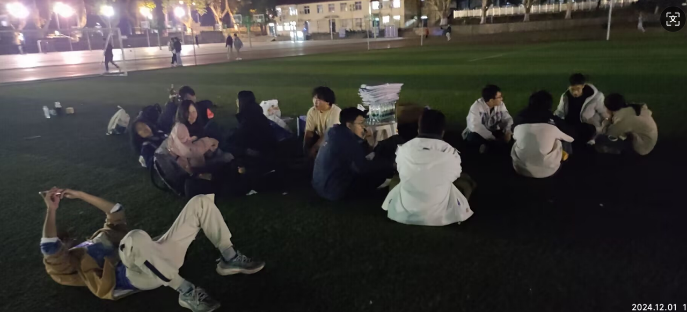

众所周知，科技节活动展每个帐篷都有对应的展板（一个长长的kt板），收场的同学要把收起来的帐篷和绑在帐篷上的沙袋都收集到一起，这可是生命无法承受之重。1+1>2,这就需要大家转动聪明的小脑瓜，而浩森主席挺身而出，成为关键智慧之星。

接下来请欣赏智慧纯享版
这个发明被命名为“车”，物理学依据是展板的光面在草地上摩擦力非常小，于是大家都开始把这些难搬的东西都放在了展板“车”上运输。战国时期的都江堰造福巴蜀大地两千余年，浩森主席发明的“车”，也广受好评。（物理学又存在了！）
下面请看后来者的灵活运用，为“车”赋予了更多的功能。
收场的时候除了有智慧的光芒，也有静静的温馨在流淌，间杂着一些有趣的事

这是收场后累瘫的大家，大家真是辛苦了啊，感谢大家的付出，没有大家的努力，也许就不会有这么成功的科技节活动......每一位SASTer对科技节的付出都是不可或缺的，每一位都是科协不可分割的一份子~